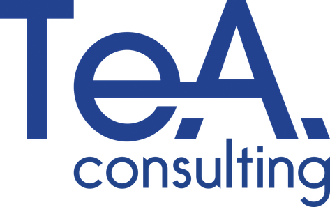
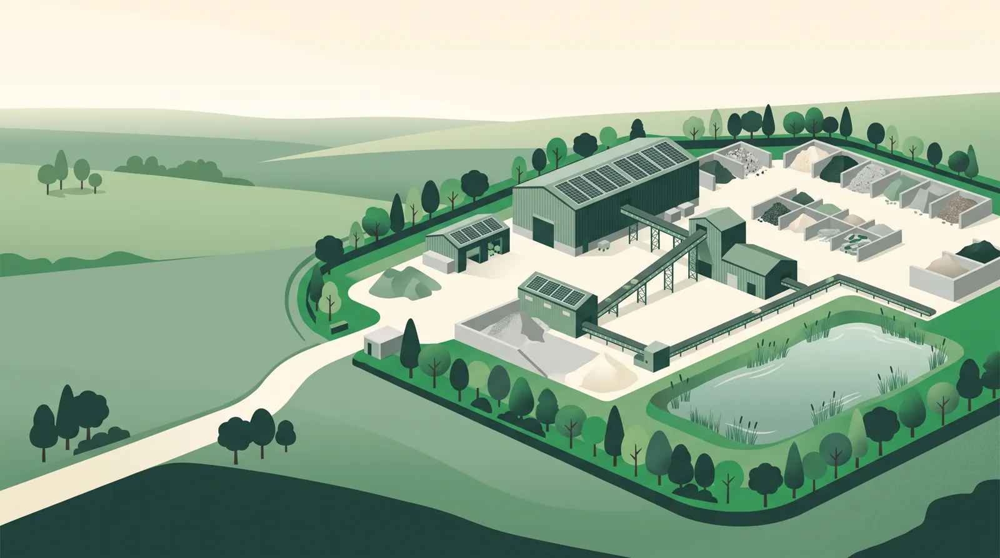
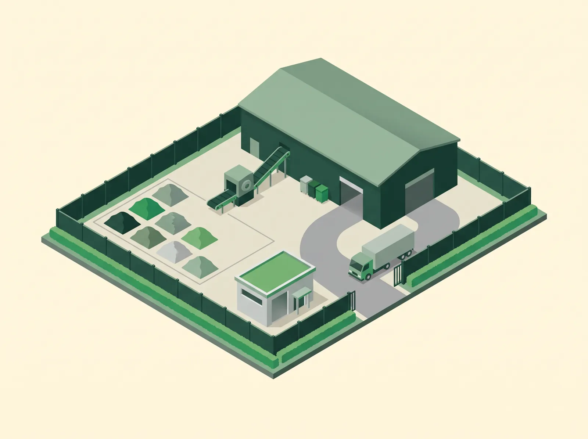
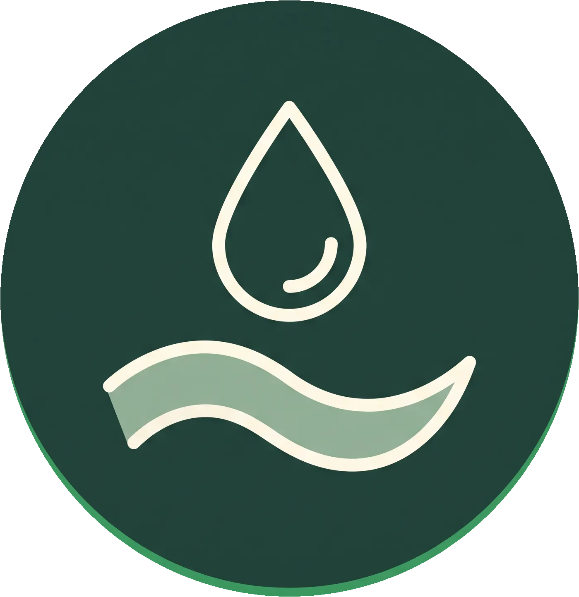
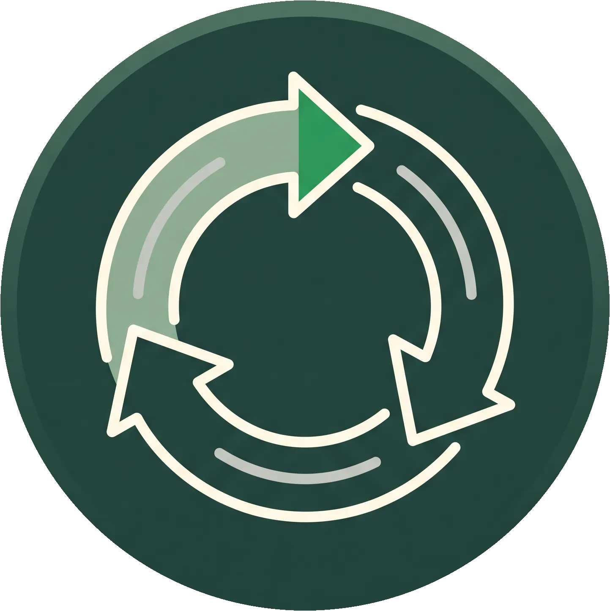
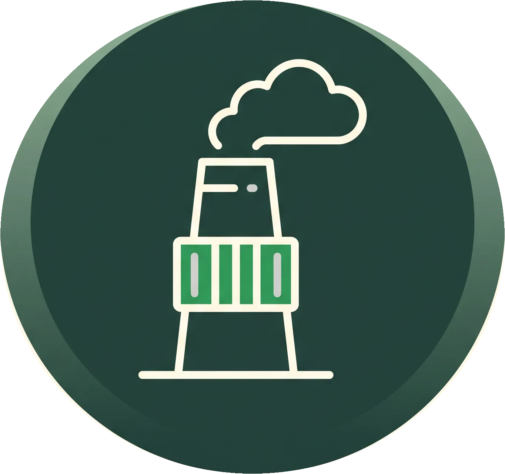
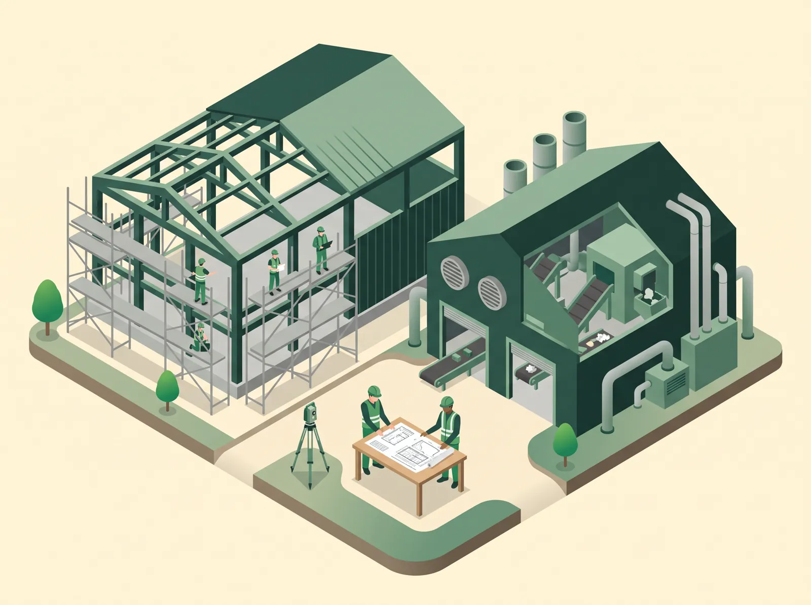
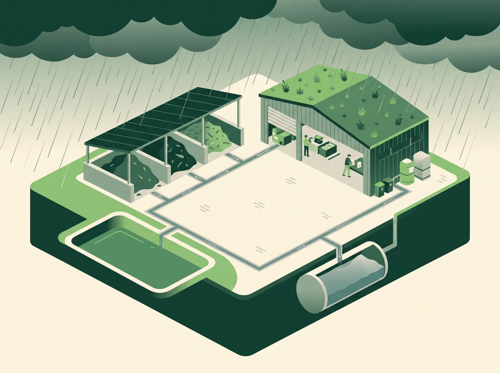
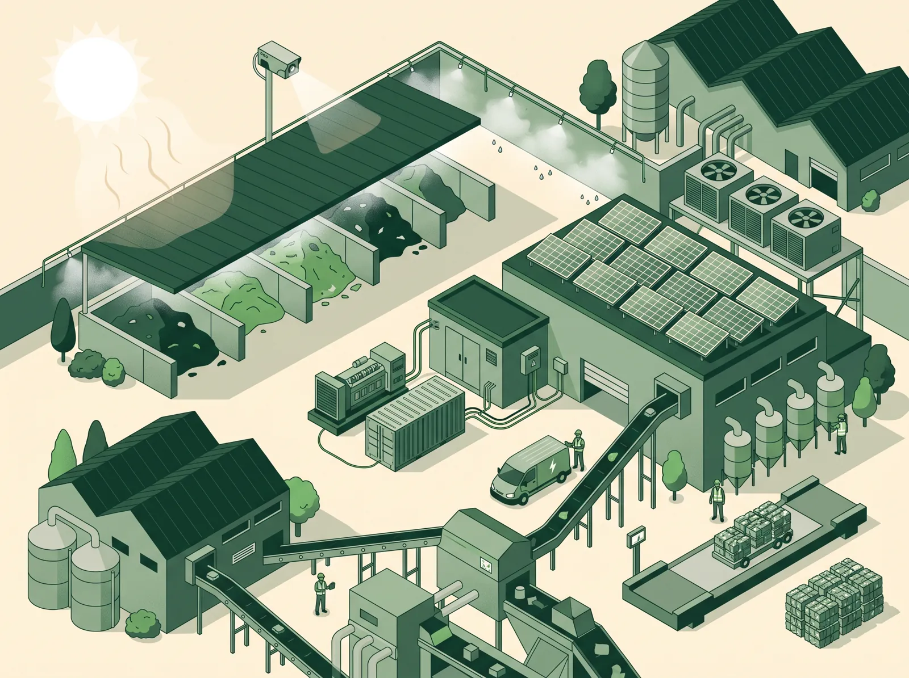
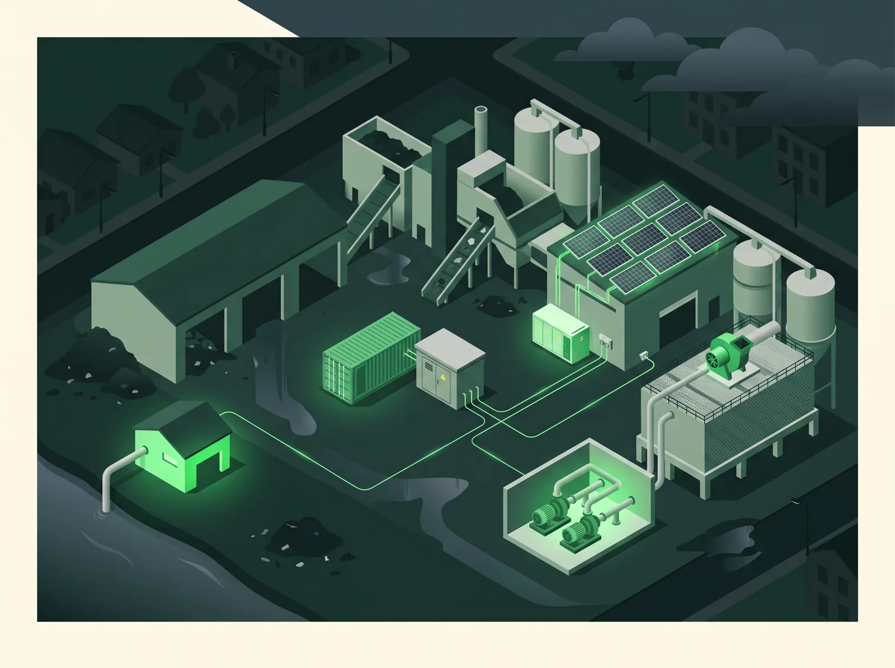

Quando serve, che cosa si dimostra, come si progetta
Giovedì 5 novembre 2026 · ore 15:00
Matteo Oliveri — Te.A. Consulting, gruppo Ekofuture
Dottore agronomo e consulente ambientale, tra i responsabili del settore Ambiente di Te.A. Consulting (gruppo Ekofuture).
Laurea magistrale con lode in Scienze e tecnologie per l'ambiente e il territorio (Milano-Bicocca); Ordine dei Dottori Agronomi e Forestali di Milano; tecnico competente in acustica ambientale.
Dal 2014 segue VIA, AIA, AUA, art. 208, cave e rifiuti; oggi anche verifiche DNSH e climatiche.




Contribuire a un obiettivo non esonera dagli altri cinque. Per ciascuno serve un documento verificabile.
In caso di conflitto prevale il regolamento. La base giuridica la decide lo strumento che vi finanzia.
Tante sigle, tre livelli: regolamenti UE → regole dei fondi → strumenti operativi.
Le regole cambiano ogni anno: conta la versione vigente alla data del bando.
Stesso impianto, obblighi diversi: decide il finanziamento.
Compilare la checklist non basta: a ogni risposta deve corrispondere un documento del progetto.

Sei domande, sei prove. Niente autodichiarazioni generiche.

Invarianza idraulica: vasche su Tr 50 anni, verifica Tr 100, più le piogge previste dalle proiezioni. Stoccaggi coperti.
Prova: Progetto di invarianza, mappe PGRA

Cumuli più bassi, temperatura controllata, prevenzione incendi. Cabine e raffreddamento con un'unità di scorta.
Prova: Progetto antincendio, procedura estiva

Antincendio, pompe delle acque e biofiltro restano in funzione: motopompa, gruppo elettrogeno, pompe di riserva.
Prova: Schema dei carichi privilegiati, prove periodiche
Un impianto che non regge al clima danneggia anche acqua e aria.
Corte dei conti, 2026: 15 progetti PNRR di teleriscaldamento esclusi per il DNSH, circa 106 mln € riassegnati.
Da dove nasce la richiesta e che cosa serve davvero.
Tappa 1Le soluzioni diventano scelte di progetto, non rattoppi.
Tappa 2 e climaLe stesse prove per ente, bando e banca.
Tappa 3Una regia unica su acqua, aria, rifiuti, rumore, biodiversità e clima: consulenza tecnica con Te.A. Consulting ed EcoRicerche; consulenza legale, aggiornamento normativo e formazione con TuttoAmbiente, per orientarsi in norme frammentate e in continuo cambiamento.
E supporto tecnico e amministrativo per preparare e presentare le domande di contributo.
Inquadra il QR: ricevi via mail la scheda di autoverifica (PDF)
Scheda di autoverifica
(via mail, PDF)
Ekofuture
contatti
| Situazione | DNSH | Che cosa serve |
|---|---|---|
| Impianto di recupero inerti che rinnova le macchine con un bando regionale | Obbligatorio | Scheda DNSH del bando, dati su rifiuti, emissioni e acqua, dismissione documentata |
| Impianto industriale con Contratto di sviluppo finanziato con fondi europei | Obbligatorio | Relazione DNSH sui sei obiettivi, dati di processo |
| Infrastruttura finanziata con FESR | Obbligatorio | Moduli regionali di verifica climatica e DNSH, firma del tecnico |
| Cantiere edile finanziato dal PNRR | Obbligatorio | Scheda cantiere, CAM, formulari con operazioni R |
| Impianto in VIA o AIA senza fondi pubblici | Non richiesto | Nella VIA clima e vulnerabilità climatica sì; gli studi sono le prove di domani |
| Impresa che chiede un finanziamento green o redige il report di sostenibilità | Facoltativo | Prove riusate da autorizzazioni e monitoraggi |
Il DNSH nasce qui, ma diventa obbligatorio solo quando un fondo o un bando lo richiama nelle sue regole.
L'impianto del DNSH non cambia: cambiano i dati da pubblicare e alcuni criteri puntuali. Per un bando vale la versione che il bando richiama.
Anche quando il bando non la impone, è il riferimento più completo per capire che cosa dimostrare e con quali documenti.
Chi ha un progetto PNRR deve tenere completo il fascicolo DNSH: checklist, relazioni, formulari, certificati. I controlli continuano.
Ogni Regione traduce il DNSH nei propri moduli: leggere il bando e i suoi allegati, e preparare prove, non dichiarazioni.
Prima di candidarsi: cercare nel decreto e negli allegati «DNSH», «danno significativo» o «Reg. 2020/852».
Negoziato aperto: nessun accordo al Consiglio europeo del 15-16/10/2026, vertice straordinario il 26-27/11/2026. La direzione è un DNSH più uniforme e più diffuso.
L'obbligo è della banca, non dell'impresa. Ma chi arriva con dati e prove già pronti risponde una volta sola e negozia meglio.
Quasi nessuna PMI sarà obbligata, ma clienti grandi e banche chiedono dati. VSME e Documento PMI-Banche servono a rispondere a tutti con un solo insieme di informazioni.
Gli studi della VIA (emissioni, rumore, acque, clima, Natura 2000) sono le prove da riusare quando arriva un bando o una banca.
Chi prepara una VIA o un progetto della coesione ha già fatto metà del lavoro DNSH sul clima: conviene impostare le due analisi insieme.
Per il Ministero l'analisi di adattabilità è «l'elemento più innovativo del principio DNSH» e va sempre considerata.
Va scritta anche quando il rischio è basso (FAQ MASE 16). Sotto i 10 milioni basta un'analisi sintetica (Guida RGS, App. 1); per le grandi infrastrutture si seguono gli Orientamenti 2021/C 373/01.
Il regolamento non chiede di maggiorare le piogge per il clima futuro: nel DNSH la verifica con le proiezioni climatiche è una scelta motivata che rafforza la relazione.
Non è una norma DNSH: è una delle prove con cui un impianto rifiuti risponde al rischio di caldo estremo nella relazione di adattamento.
Il DNSH non è una formalità: si controlla anche dopo il finanziamento, e un'esclusione si traduce in risorse perse.